BlogNovember 17, 2026LLM steering · Inference systems12 min read
EasySteer: A Unified Framework for High-Performance and Extensible LLM Steering
Steering changes what a language model does by nudging its hidden states at inference time, with no retraining. EasySteer makes it a serving feature: steering vectors are built into vLLM, attached per request, and cost only a small fraction of throughput.

Contents
TL;DR
A steering vector is a direction in a model's hidden-state space, such as “more cheerful”, “refuse”, or “stop second-guessing”, that can be added to the residual stream while the model generates. It changes behaviour without touching the weights. The idea is simple, but running it has meant wrapping Hugging Face models in hooks, one request at a time.
EasySteer is an open-source framework that builds steering into vLLM. It extracts vectors with analysis methods such as CAA, PCA, linear probes and sparse-autoencoder features, or trains them with methods such as LoReFT and LM-Steer, then applies them inside vLLM's optimized engine with per-request control over which layers, which tokens, how strongly, and how several vectors combine. It comes with example vectors for eight application domains and a web demo.
Applying a vector to all 28 layers keeps 87.7% to 93.5% of vLLM's batch throughput, and EasySteer runs 10.8× faster than pyreft and 22.3× faster than repeng on long-sequence batch inference. Used for overthinking, steering cuts reasoning tokens by 40% on GSM8K while raising accuracy; used for hallucination, PCA steering raises Llama-3.1-8B's TruthfulQA multiple-choice accuracy by 12.1 points.
1Why steering needs a system
Fine-tuning changes behaviour by changing weights, which is expensive and can erase what the model already knew. Prompting is cheap but gives no guarantees. Steering sits in between: by the linear representation hypothesis, many concepts are encoded as directions in hidden-state space, so adding α·v to the hidden state at some layer strengthens a concept, and subtracting it suppresses one. Thinking-pattern vectors curb overthinking in maths, preference-trained vectors control persona, and single directions switch refusal on and off.
Putting this into practice has been the hard part. Steering means changing the forward pass, which in existing frameworks means wrappers and hooks around Hugging Face models. Those frameworks are slow (EasyEdit2 has no batch inference at all), lack token-level and multi-vector control, and are hard to extend with new algorithms.
| repeng | pyreft | EasyEdit2 | EasySteer | |
|---|---|---|---|---|
| Built on | Transformers | Transformers | Transformers | vLLM |
| Speed (batch, long sequences) | 1.0× | 2.1× | no batching | 22.3× |
| Algorithms | analytical | learned | both | both |
| Steers | hidden states | hidden states | hidden states | hidden states, MoE router logits |
| Granularity | layer | layer, position | layer, position | layer, position, token, stage |
| Multiple vectors | yes | single only | yes | vectors and algorithms |
| Modalities | text | text | text, vision | text, vision |
Feature comparison from the paper's Table 1; speed is relative to repeng.
2How EasySteer works
EasySteer has two core modules, one that generates steering vectors and one that applies them inside vLLM, plus a resource library and a demo. Figure 1 follows one vector from extraction to a steered reply.
Extractcontrast hidden states, CAA
v = mean(h⁺) − mean(h⁻) at layer l → happy_diffmean.gguf
Configureone request, one spec
spec = SteeringSpec(vectors=[VectorSpec( source="happy_diffmean.gguf",what algorithm="direct", scale=2.0,how layers=range(10, 24),where apply=ApplySpec(prompt="all", generation="all"))])when llm.generate(prompts, steering=[False, spec])
The same batch can mix unsteered (False) and steered requests.
Apply in vLLMwrapper on every decoder layer, continuous batching
h′ = h + α·v, after each steered layer, only for the request that asked for it. decode step 0
Comparesame prompt, same model
“Alice’s dog has passed away. Please comfort her.”
SteeringSpec says which vector, which algorithm and strength, which layers and which tokens, using the current v0.29 API. Apply: inside vLLM, a wrapper on each decoder layer adds the vector only for the request that asked for it, while the other requests in the same batch run unchanged. Compare: outputs from the paper's Table 3, where a sentiment vector pushes the reply from consolation to misplaced cheer.Making a steering vector
Analysis-based methods find a direction from data. Given texts that show a concept and texts that do not, contrastive activation addition (CAA, also called DiffMean) takes the difference of their mean hidden states; PCA takes the main direction of variation of paired or centred activations, then flips it to point toward the concept; a linear probe takes the weight vector of a classifier trained to separate the two sets. EasySteer captures the hidden states for these methods with vLLM itself. Vectors can also come from sparse autoencoders: search Neuronpedia's feature descriptions for a concept, pick a feature, and use its decoder column.
Learning-based methods train a small function on task data while the model stays frozen: a supervised additive vector h + b, LM-Steer's linear map h + εWh, or LoReFT's low-rank edit h + Rᵀ(Wh + b − Rh) with only 2rd + r parameters. EasySteer refactors pyreft for this route.
Applying it inside vLLM
Rather than editing every model implementation, EasySteer keeps a registry of decoder-layer class names and wraps those layers when the model loads. The wrapper intercepts each layer's output, applies the steering algorithm, and hands back the original data structure, so it works across architectures, including vision-language models, without touching their code. Algorithms implement one interface, BaseSteerVectorAlgorithm, and register with a decorator; beyond adding vectors, the same interface reads and modifies router logits in mixture-of-experts models.
Control is fine-grained. A request can target specific layers, prompt or generated tokens, positions or windows, and the docs' current version can trigger on particular token ids. Several vectors and algorithms can act in one pass, with a conflict rule (priority or sequential stacking) where they overlap. Steering configs are cached by content, distinct configs share a batch, and KV-cache keys include the steering config, so steered and unsteered requests never share cached blocks.
Eight domains, one demo
The resource library covers eight application domains, safety, reasoning, knowledge, truthfulness, language, sentiment, personality and style, with example vectors spread across the repository's replications and demos. A Vue and Flask web demo puts inference, chat, vector extraction and training in one interface, with baseline and steered outputs side by side. Figure 2 shows one example per domain.
3How fast
We benchmark on one NVIDIA A6000 with DeepSeek-R1-Distill-Qwen-1.5B on MATH prompts. Steering uses zero-valued vectors so every setting produces the same number of tokens, and vectors act at every token position. EasySteer uses vLLM's continuous batching; the other frameworks use the largest fixed batch that fits in memory.
Batch inference, DeepSeek-R1-Distill-Qwen-1.5B, A6000
Throughput with steering vs plain vLLM (tokens/s)
Steering costs little. With every layer steered, batch throughput falls by 12.3% for short outputs and 6.5% for long ones; with three vectors on every layer, long-output throughput stays at 90.6% of plain vLLM. Single-request latency rises modestly too, from a 45.3 ms first token to 51.0 ms with all layers steered.
All-layer steering, ≤2048 tokens
Batch throughput (tokens/s)
Against existing frameworks the gap is an order of magnitude. For long-sequence batch inference, EasySteer reaches 7,074 tokens/s, against 653 for pyreft and 317 for repeng: 10.8× and 22.3× faster. Even one request at a time, it decodes about 1.6× to 2× faster than the others.
4Does it work
Less overthinking
Following SEAL, we extract three vectors from 1,000 MATH training samples, for execution, reflection and transition steps, and at each reasoning-step boundary (the \n\n token) add execution while subtracting the other two. This uses EasySteer's token-triggered, multi-vector control in a single request.
DeepSeek-R1-Distill-Qwen, 8,192-token limit
Accuracy against tokens per answer, without and with SEAL steering
On the 1.5B model, steering raises GSM8K accuracy from 79.6% to 82.3% while cutting tokens by 40% (2,435 → 1,460), and raises MATH500 accuracy from 70.8% to 78.4%. The 7B model saves 13.3% and 16.8% of its tokens on the two benchmarks; its GSM8K accuracy dips from 90.3% to 88.5% while MATH500 rises from 86.6% to 88.2%.
Fewer hallucinations
On TruthfulQA, with two-fold cross-validation, we compare three analysis-based methods, which contrast truthful and hallucinated answers at the final token, with two learning-based ones trained on question–answer data.
TruthfulQA, two-fold cross-validation
Multiple-choice accuracy (%)
Every method can be swapped in by changing one argument, which makes comparisons like this cheap. On Llama-3.1-8B, PCA raises multiple-choice accuracy from 50.55% to 62.67%; on Qwen2.5-1.5B, LoReFT raises open-ended QA accuracy from 27.17% to 33.41%. The trade-off is visible too: analysis-based methods keep fluency, while learning-based methods buy accuracy with lower fluency scores.
5Using it today
EasySteer is Apache-2.0 licensed. The current release is built on vLLM 0.29.0 with continuous batching, prefix caching and CUDA-graph support, and its request API has evolved since the paper: a SteeringSpec replaces the paper's SteerVectorRequest, and token selection lives in ApplySpec. A minimal example:
from vllm import LLM, SamplingParams from vllm.steer_vectors import SteeringSpec, VectorSpec, ApplySpec llm = LLM(model="Qwen/Qwen2.5-1.5B-Instruct", enable_steer_vector=True, steer_algorithms=["direct"]) spec = SteeringSpec(vectors=[VectorSpec( source="vectors/happy_diffmean.gguf", scale=2.0, layers=list(range(10, 24)), apply=ApplySpec(prompt="all", generation="all"))]) out = llm.generate(prompt, steering=spec, sampling_params=SamplingParams(temperature=0.0, max_tokens=128))
The same spec can be sent to an OpenAI-compatible server started with vllm serve … --enable-steer-vector, as a steering field in each request. Single-vector steering now runs inside vLLM's CUDA graphs; on the repository's own v0.29 benchmark (RTX A6000, the same 1.5B model), all-layer steering costs about 3% of throughput. The repository also reproduces sixteen published steering papers as notebooks, from refusal directions and inference-time intervention to SEAL, SHARP for vision-language hallucination and SteerMoE for expert routing. Steering is dual-use: EasySteer is built as a research tool for safer, more controllable models, and any behavioural change made with it should be disclosed to users.
Citation
@inproceedings{xu2026easysteer,
title = {EasySteer: A Unified Framework for High-Performance and Extensible LLM Steering},
author = {Xu, Haolei and Mei, Xinyu and Yan, Yuchen and Zhou, Rui and Zhang, Wenqi and Lu, Weiming and Zhuang, Yueting and Shen, Yongliang},
booktitle = {Proceedings of the 2026 Conference on Empirical Methods in Natural Language Processing: System Demonstrations},
pages = {24--35},
year = {2026}
}References
- Kwon et al. (2023). Efficient Memory Management for Large Language Model Serving with PagedAttention (vLLM). SOSP.
- Turner et al. (2023). Steering Language Models with Activation Engineering.
- Park et al. (2023). The Linear Representation Hypothesis and the Geometry of Large Language Models.
- Wu et al. (2024). ReFT: Representation Finetuning for Language Models. NeurIPS.
- Chen et al. (2025). SEAL: Steerable Reasoning Calibration of Large Language Models for Free.
- Lin et al. (2021). TruthfulQA: Measuring How Models Mimic Human Falsehoods.
A demonstration video is on YouTube; installation, the full API and the replications are in the documentation.